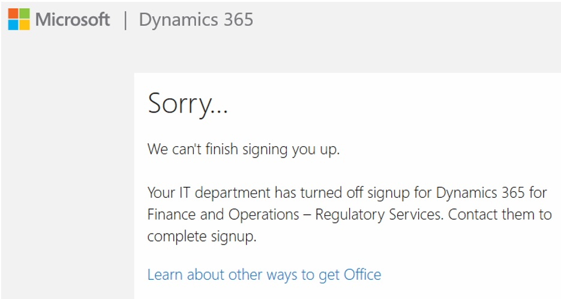

Regulatory Configuration Service
[!include[banner](../includes/banner.md)]Regulatory Configuration Service (RCS) is a standalone designer and lifecycle management service for no-code/low-code globalization functionality. RCS lets globalization stakeholders extend and customize key globalization areas of tax, e-invoicing, regulatory reporting, banking, and business documents without having to involve developers. This no-code/low-code globalization approach makes globalization easier, faster, and more cost effective to create or extend.
RCS provides the following capabilities:
- Support for all functionality that is provided by Electronic reporting (ER).
- A prerequisite to configure new globalization microservices.
- Support for Electronic Invoicing. For more information, see Electronic Invoicing.
- Supports for Tax Calculation. For more information, see Tax service.
- Support for new globalization feature functionality that simplifies the lifecycle management of multi-component features and provides extra capability to configure actions and set up feature parameters. For more information, see Regulatory Configuration Service – simplified globalization feature management for globalization services.
- Support for centralized publication, storage, and sharing of custom configurations in the Global repository to simplify configuration management without requiring the use of Microsoft Dynamics Lifecycle Services (LCS).
Access RCS
You can sign up for or sign in to RCS from the Regulatory Configuration Service page.

On the Regulatory Configuration Service page, review and accept the supplemental terms and conditions for use of the service, and then select one of the following buttons:
- Sign up if you're a first-time user of the service, and you're using a business email address to provision your organization a service environment
- Sign in if you've previously signed up for the service, and you want to access your organization environment
Regional availability
RCS is generally available in the following regions:
- United States
- India
- France
- Europe
For a complete list of regions, see Dynamics 365 and Power Platform: Availability, data location, language, and localization.
RCS default company
Design time functionality that is used in RCS is shared across all companies. There is no company-specific functionality. Therefore, we recommend that you use one company, DAT, with your RCS environment.
However, in some scenarios, you might want to make ER formats use parameters that are related to a specific legal entity. In these scenarios only, you should use the default company switcher. For an example, see Configure ER format to use parameters that are specified per legal entity.
Related RCS documentation
For more information about related components, see the following topics:
RCS:
Global repository:
- Create ER configuration & upload to Global repo
- Share configuration in Global repo
- Enhanced filtering in Global repo
- Download ER configurations from the Global repository
- Discontinuing configurations in Global repo
- Regulatory Configuration Service (RCS) – Lifecycle Services (LCS) storage deprecation
Globalization feature:
Troubleshooting RCS sign-up
When you sign up for RCS from the service page, you might encounter an issue that is related to Azure Active Directory (Azure AD). The error message that you receive indicates that sign-up for RCS is currently turned off and must be turned on before you can complete the sign-up process.

The issue occurs because you're blocked from signing up for ad-hoc subscriptions, and the AllowAdHocSubscriptions property must be enabled in your tenant.
- If your IT department manages your organization's Azure tenants, contact that department to report the issue.
- If you're responsible for managing your Azure tenants, you can fix the issues by following the steps in What is self-service sign-up for Azure Active Directory.